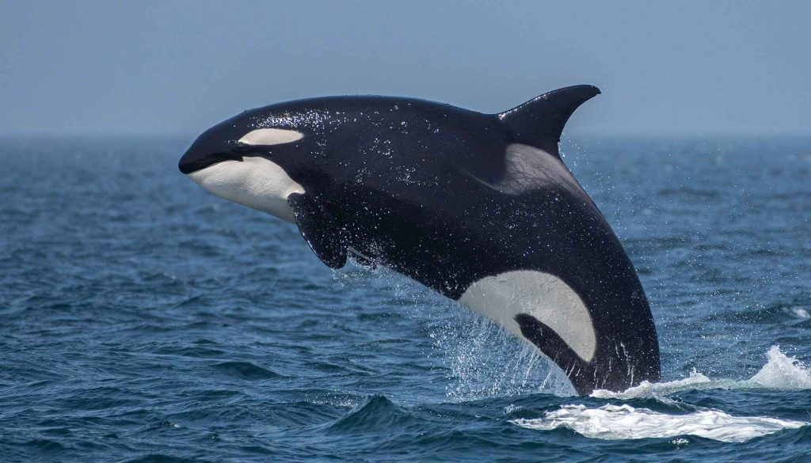
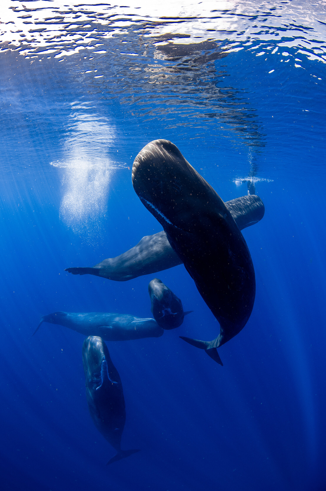
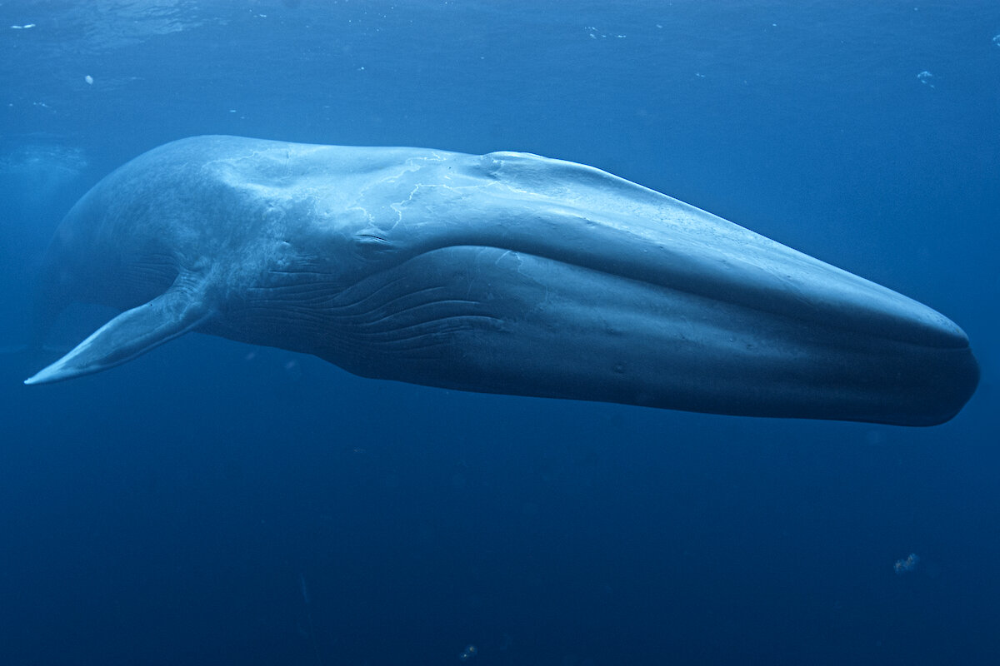
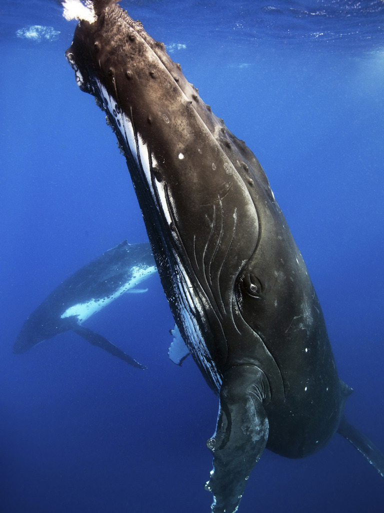

The orca or killer whale (Orcinus orca) is a toothed whale belonging to the oceanic dolphin family, of which it is the largest member. It is recognizable by its black-and-white patterned body. A cosmopolitan species, orcas can be found in all of the world's oceans in a variety of marine environments, from Arctic and Antarctic regions to tropical seas.
Whales breach ( or flipper-slap/tail-breach/etc) to help rid themselves of parasites. Whales, Humpback Whales especially, sometimes carry a variety of external (as well as internal) parasites that may cause itching and irritation to their sensitive skin. These parasites include barnacles (Humpback can carry close to 1,000lbs of barnacles on their body which sounds like a lot of extra weight to lug around but relative the total mass of the whale it is only equivalent to us wearing shorts and a t-shirt!) as well as small crustaceans called “Cyamids” or “Whale Lice.”


The sperm whale or cachalot (Physeter macrocephalus) is the largest of the toothed whales and the largest toothed predator. It is the only living member of the genus Physeter and one of three extant species in the sperm whale family, along with the pygmy sperm whale and dwarf sperm whale of the genus Kogia.
The sperm whale is a pelagic mammal with a worldwide range, and will migrate seasonally for feeding and breeding. Females and young males live together in groups, while mature males (bulls) live solitary lives outside of the mating season. The females cooperate to protect and nurse their young. Females give birth every four to twenty years, and care for the calves for more than a decade. A mature sperm whale has few natural predators, although calves and weakened adults are sometimes killed by pods of killer whales (orcas).
The sperm whale is a pelagic mammal with a worldwide range, and will migrate seasonally for feeding and breeding. Females and young males live together in groups, while mature males (bulls) live solitary lives outside of the mating season. The females cooperate to protect and nurse their young. Females give birth every four to twenty years, and care for the calves for more than a decade. A mature sperm whale has few natural predators, although calves and weakened adults are sometimes killed by pods of killer whales (orcas).

